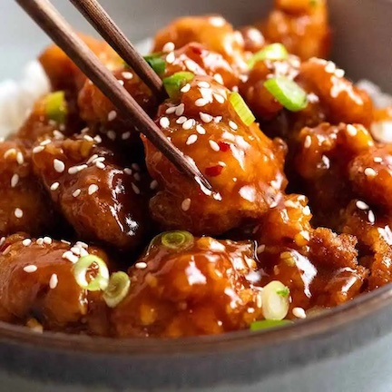

Jennifer 8. Lee did extensive research to write a book about American-Chinese food called "The Fortune Cookie Chronicles."
In the course of her travels, she found that General Tso was a very real military hero, and his family still lives in his hometown of Xiangyin, in Hunan province — but no one there knows him for his fame as the namesake of an American fried chicken dish.